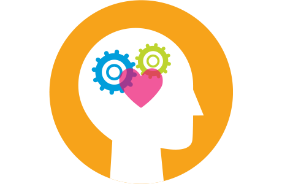

Social and Emotional Learning
What is Social and Emotional Learning?
Social and emotional learning (also known as SEL) is the process through which children and adults understand and manage their emotions, set and achieve positive goals, feel and show empathy for others, establish and maintain positive relationships, and make responsible decisions.
SEL Competencies
Social and Emotional Learning Impact

Research studies demonstrate that promoting social and emotional learning (SEL) gets results. These results include: student achievement, neuroscience, health, employment, psychology, classroom management, learning theory, economics, and the prevention of youth problem behaviors.
SEL Results
 |
 |
|||
|---|---|---|---|---|
| Leads to Academic Outcomes and Improved Behaviors | Impact is Long-Term and Global | 11:1 Return on Investment | Can Help Reduce Poverty, Improve Economic Mobility | Improves Lifetime Outcomes |